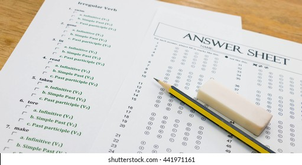

Are you looking to ace your Class 10 exams and score 100% marks? Look no further! In this guide, we will provide you with the tips and strategies you need to excel in your exams and reach your full potential.
The first step in reaching your goal of 100% marks is to create a study schedule. Make a plan for how you will allocate your time each day, taking into consideration any extracurricular activities or responsibilities you have. Try to stick to your schedule as much as possible and don't forget to set aside time for breaks and relaxation to avoid burnout.
Organization is key to success in your exams. Keep all of your notes and study materials in one place and make sure you have everything you need for each study session. Consider using study tools such as flashcards and summaries to help you retain information more easily.

If you are struggling with a particular subject, don't be afraid to ask for help. Reach out to your teachers, classmates, or tutors for clarification and additional support. The more you understand the material, the better you will perform in your exams.
One of the best ways to prepare for your exams is to practice past papers. This will give you a good idea of the types of questions you can expect and help you get into a rhythm for taking exams. Make sure you have a good understanding of the answers so you can identify areas where you need to improve.
Finally, it's important to stay positive and believe in yourself. Remember why you are working towards your goal of 100% marks and stay focused on your progress. Surround yourself with supportive friends and family, and take care of yourself by getting enough sleep and eating well.
With these tips and strategies, you can be well on your way to scoring 100% marks in your Class 10 exams. Stay motivated, stay focused, and believe in yourself!
Here is the content of your blog page.
Here is some more content of your blog page.